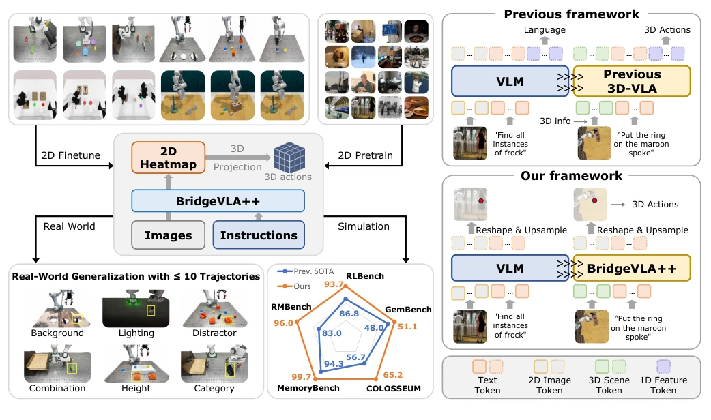
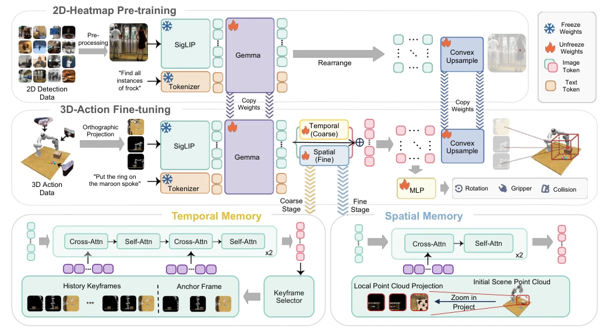
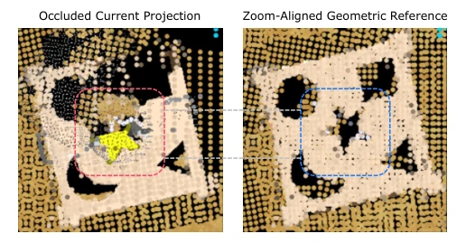
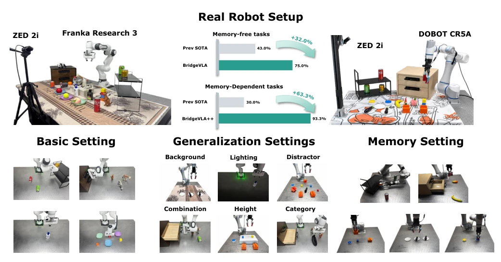
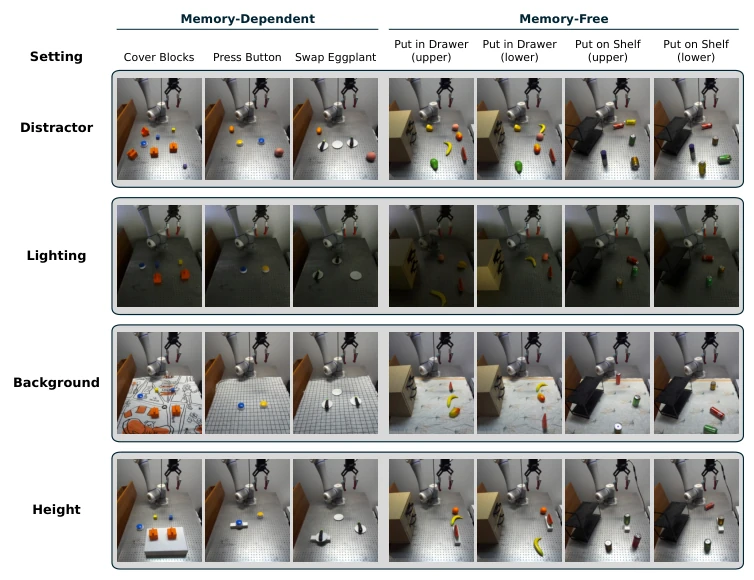
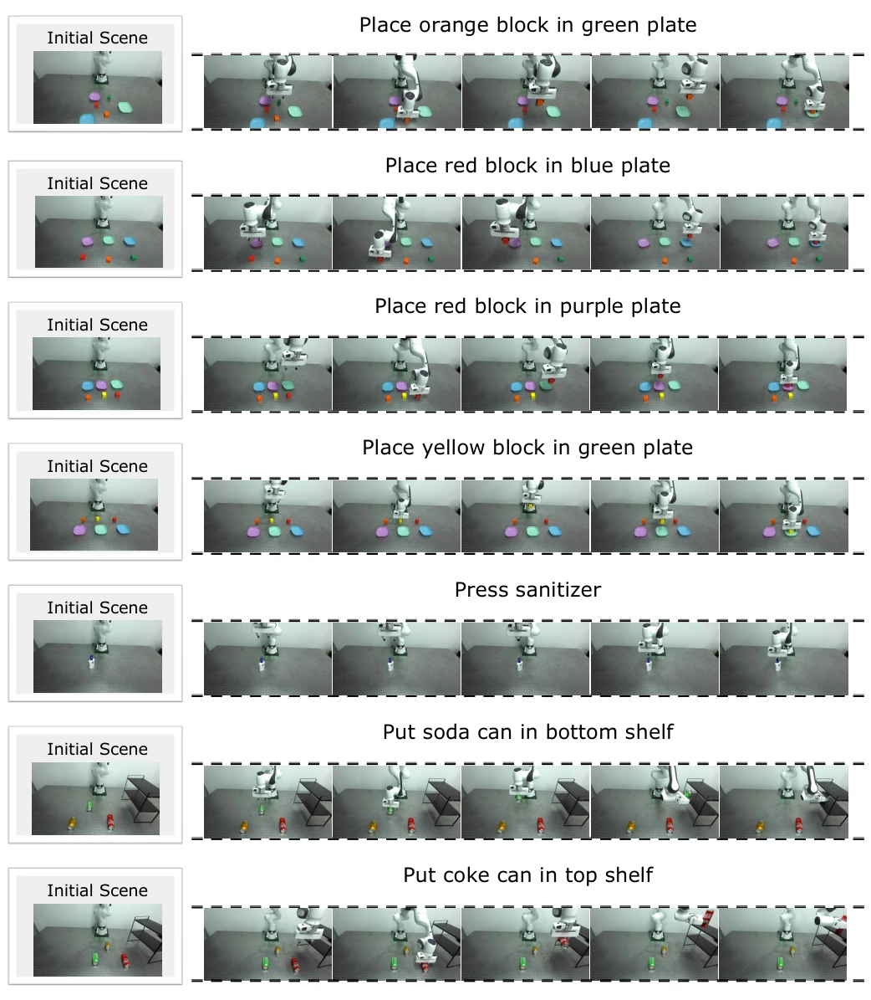
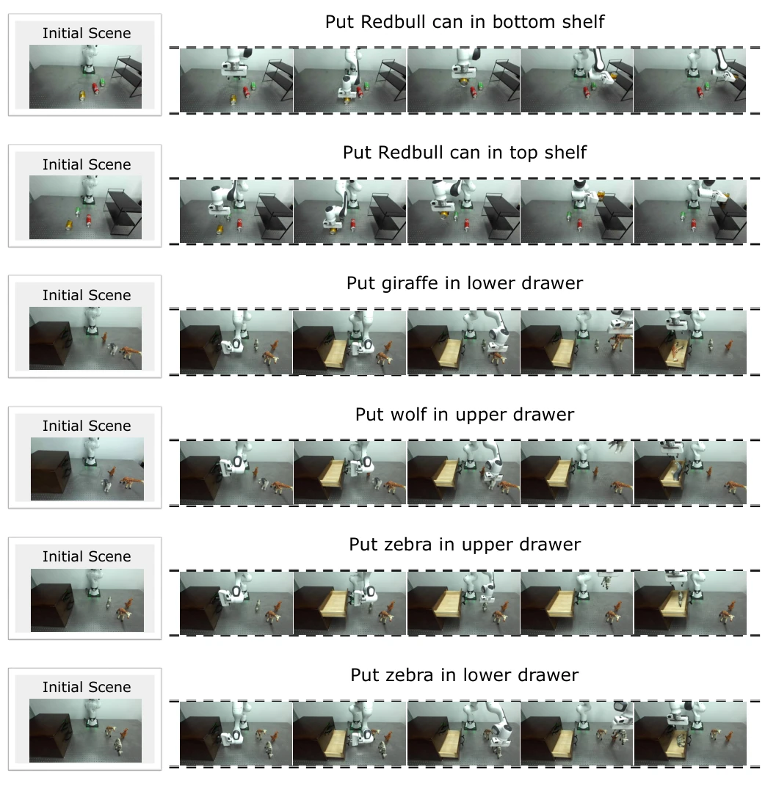
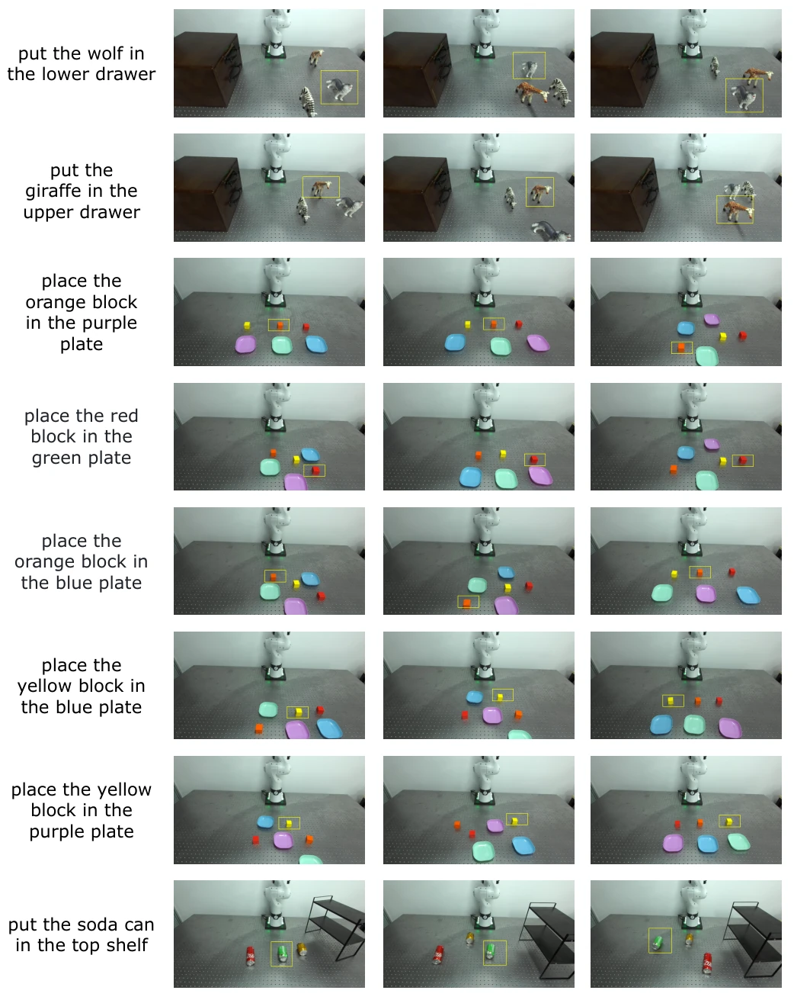
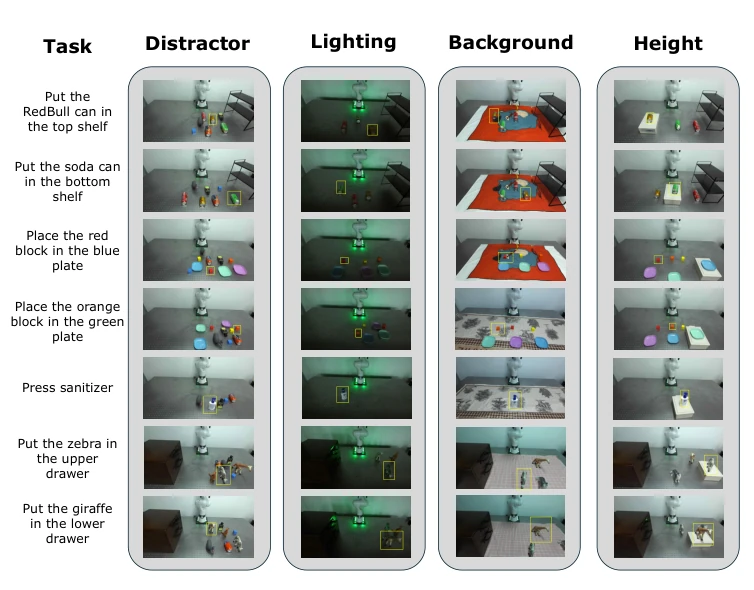
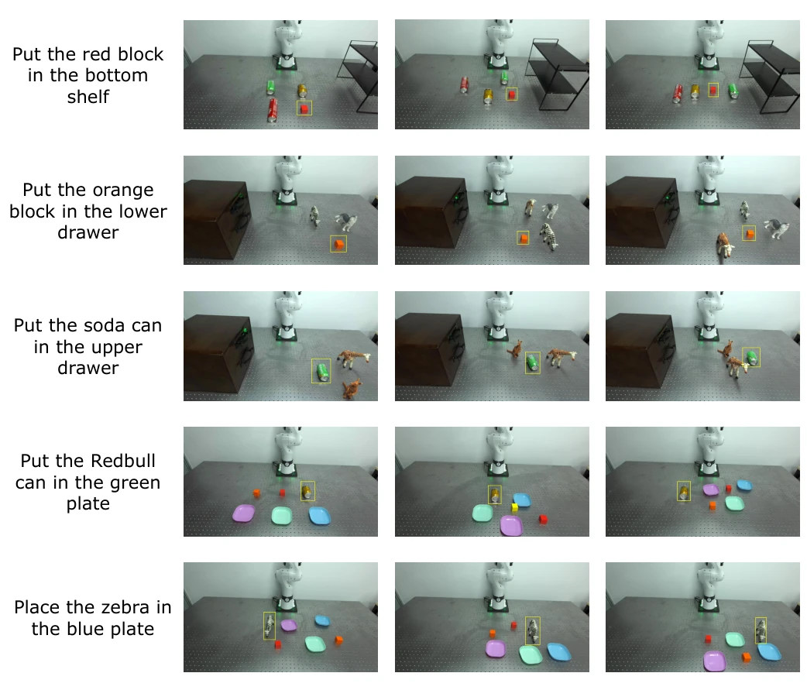

This paper adds a "memory module" to BridgeVLA, which sounds like installing a new window in an old house. The core contribution lies in retaining the VLA's 2D heatmap alignment strategy while solving the problem of "poor memory". Although "++" sounds like squeezing toothpaste, on memory-dependent tasks like RMBench, the success rate jumped from 20% to 93%, which is indeed impressive. However, inference latency increased by 0.22 seconds; for real-time control, is this 0.22 seconds worth it? Additionally, although claimed to be general-purpose, it mainly runs in simulation and on specific real robots; the ability to generalize to complex dynamic environments needs observation. Overall, it is a robust engineering improvement, but do not expect it to suddenly understand human emotions. Its biggest highlight is that it did not sacrifice original data efficiency to add memory, which is rare in the VLA field.
Existing 3D VLA models mostly suffer from three hard flaws: data hunger, poor generalization, and lack of memory. Most VLA models [1], [4], [5] rely on 2D images, losing geometric structure; while 3D methods [11], [12] often break spatial correspondence to adapt to VLMs. More critically, they are typically Markov decision processes, looking only at the current frame [16]. Once the target is occluded or multiple steps of history are needed to judge the next step, the model gets confused. For example, SAM2Act+ mentioned in [17] adds memory but lacks explicit spatial geometric recovery. This paper aims to solve data scarcity, distribution shift, and memory loss problems, especially enabling robots to "remember" previously seen occluded objects. This is crucial in practical operations, as the real world is full of occlusions and tasks requiring long-term planning.

Fig. 1. Overview. BridgeVLA is a 3D VLA framework that aligns its inputs and outputs in a unified 2D image space. It is pre-trained on object grounding using 2D heatmaps and fine-tuned on action prediction for 3D manipulation. BridgeVLA++ extends BridgeVLA with a unified spatio-temporal memory architecture in which temporal memory preserves interaction history to determine what to do next, whereas spatial memory restores previously observed geometry to determine where exactly to act. Experiments in both simulated and real-world settings demonstrate that BridgeVLA++ effectively handles memory-dependent and memory-free tasks while preserving BridgeVLA’s data efficiency and generalization capabilities.
The overall framework is based on BridgeVLA, with the core being "input-output 2D alignment". First, point clouds are projected into multi-view orthogonal images, input to a pre-trained VLM (PaliGemma), outputting 2D heatmaps instead of Token sequences, then back-projected to 3D actions. This is the foundation. BridgeVLA++ adds spatiotemporal memory on this basis. The coarse stage (Coarse) uses temporal memory $T_t$, containing anchor views, neighbor keyframes, and adaptive subgoal keyframes, using Cross-Attention to let the model know "what to do next". The fine stage (Fine) uses spatial memory $S_t$, storing the initial point cloud $P_0$, re-rendering based on coordinates predicted by the coarse stage, providing unoccluded geometric reference, solving the "where specifically to do" problem. The memory module parameters increase by only about 269 million, injected via attention mechanism, not breaking the original heatmap head. This design cleverly integrates memory into the visual Token space, avoiding the expensive cost of retraining the entire VLM.

Fig. 2. Model Architecture. Top: BridgeVLA first learns language-conditioned 2D heatmap prediction from detection data and transfers the resulting weights to 3D action fine-tuning. During a policy forward pass, the observed point cloud is rendered into orthographic views and processed with the language instruction by the VLM to produce multi-view visual tokens and heatmaps. The coarse heatmaps localize a 3D waypoint, around which the point cloud is cropped, magnified, and re-rendered for a shared-weight fine pass. The fine heatmaps determine the final translation, while global tokens and local tokens at the coarse waypoint are fed to an MLP to predict rotation, gripper state, and collision avoidance. Bottom: BridgeVLA++ augments this forward flow with temporal and spatial memories. At the

Fig. 3. Occlusion-robust fine localization using spatial memory. Left: the current zoomed observation, partially occluded by the gripper and manipu- lated object. Right: the stored point cloud P0 re-rendered under the same predicted waypoint and zoom transformation, providing a spatially aligned, less-occluded reference of the same local region.
Tested on 5 simulation benchmarks including RLBench, COLOSSEUM, GemBench, etc. BridgeVLA++ achieves SOTA on RMBench and MemoryBench, success rate improved from BridgeVLA's 20.0% to 93.3%. Real robot experiments were conducted on Franka and Dobot, showing robust performance on memory-independent tasks and significant improvement on memory-dependent tasks. Ablation experiments show that removing spatial or temporal memory leads to performance degradation, especially in occlusion scenarios. Inference latency increased from 0.35s to 0.57s, but within acceptable range. Two-arm extension also validates the framework's scalability. In real-world tests, BridgeVLA improved the baseline by an average of 32% on memory-independent tasks, proving its generalization ability. Additionally, the authors demonstrated robustness under lighting and background interference, further confirming the model's potential in practical deployment.

Fig. 4. Real-Robot Evaluation Setup. Top left: the general-manipulation platform—a 7-DoF Franka Research 3 arm observed by a static ZED 2i stereo camera. Top right: the memory platform—a 6-DoF Dobot CR5A arm with the same camera configuration. Bottom: the evaluation settings of the two suites. The bars at the top show the average gain of our models over the strongest prior method in each task group: RVT-2 across the seven Franka settings and SAM2Act+ in the Dobot basic setting.

Fig. 7. The Distractor, Lighting, Background, and Height Settings on the Dobot Platform. Initial scene of every instruction of the Dobot suite (columns, named as in Table XIX) under each of the four visual-disturbance settings (rows; Appendix L). Frames in the Lighting row are gamma-darkened for display where the camera’s auto-exposure compensated for the reduced illumination; the policy receives the raw frames.

Fig. 8. Real-Robot Rollouts (I). BridgeVLA rollouts on the real-robot task suite of Appendix K.

Fig. 9. Real-Robot Rollouts (II). BridgeVLA rollouts on the real-robot task suite of Appendix K.

Fig. 10. The Combination Setting (I). During training, the manipulated objects and skills are seen, but their combinations are unseen.
其他图片Other Figures

Fig. 6. The Distractor, Lighting, Background, and Height Settings. Visualization of the four visual-disturbance settings of the real-robot evaluation (Appendix K).

Fig. 11. The Combination Setting (II). During training, the manipulated objects and skills are seen, but their combinations are unseen.